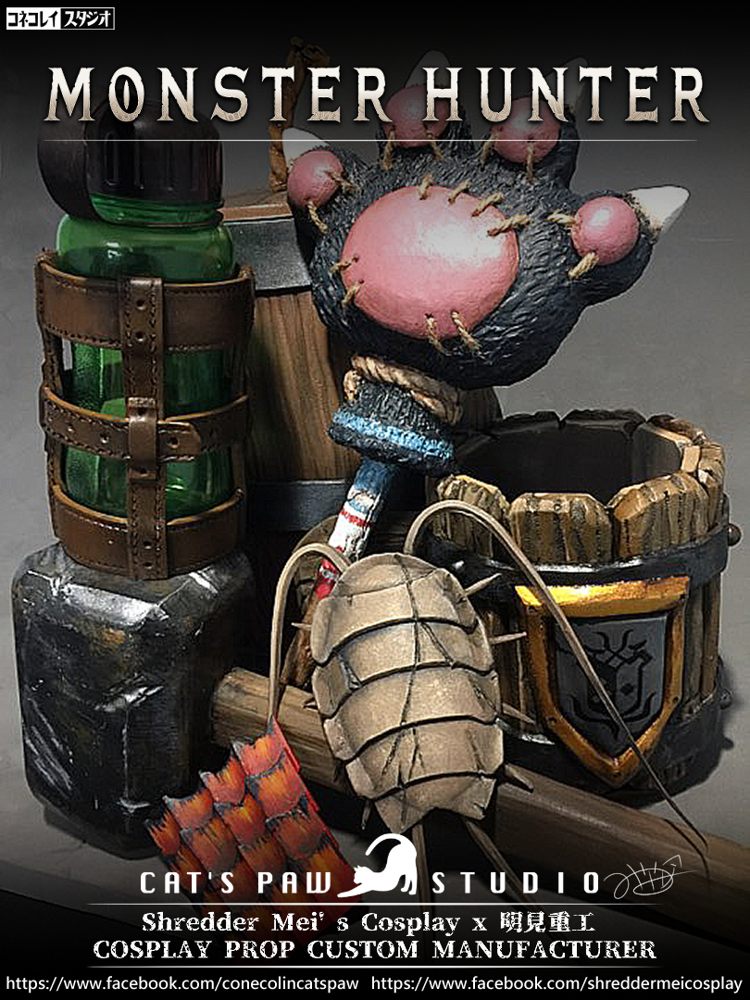
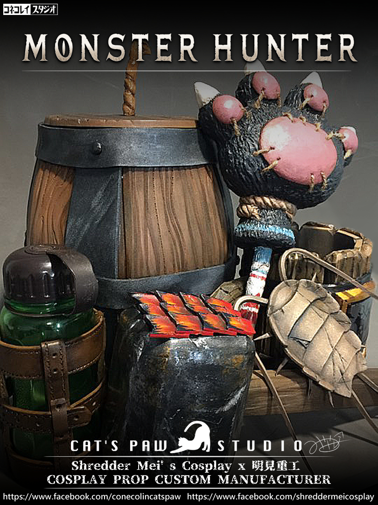
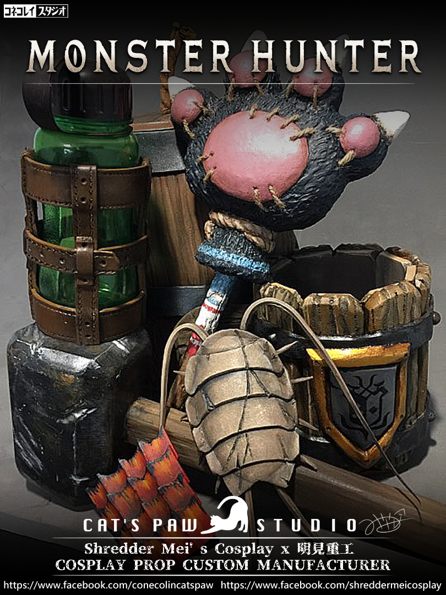
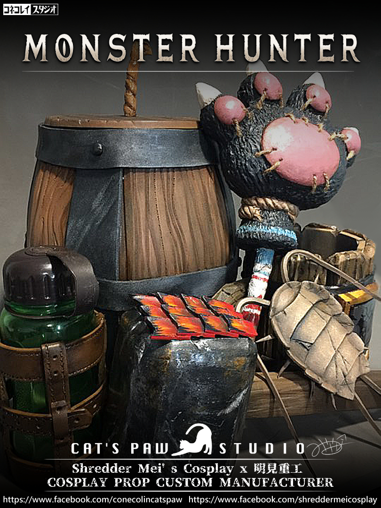

在野外獵人營地，傍晚的微風輕拂，獵人坐在篝火旁，享受這片刻的寧靜。這片營地專為獵人們準備，讓他們短暫休息，調整裝備，恢復體力。
獵人拿起身旁的小木桶，這是萬用工具，有時裝補給品，有時用來製作爆筒。
此刻，它被清理得乾乾淨淨，只裝著幾個小型工具，整齊有序。
獵人熟練地將它放好，時刻準備應對下一場狩獵。
接著，他拿起木杯子。這只木杯上刻著他親手打造的金屬獵人標誌，象徵著他的驕傲。
他倒了些熱飲進木杯，感受著杯子的溫暖和鐵環的堅實，這時刻讓他稍稍感到輕鬆。
不遠處，光蟲罐子靜靜立於野獸的皮草上，透明的綠色罐子裡幾隻光蟲在微微發光。
獵人仔細檢查著罐子周圍的皮革捆綁，光蟲是他在狩獵時的眼睛，尤其在夜晚，它們的光芒是指引前路的關鍵。
這時，貓僕悄悄靠近，用爪子戳了戳獵人的腿。
貓僕的武器在剛剛那場激烈的戰鬥中有些許毀損。
貓爪槌子有著毛絨絨的貓爪外型，上面也有尖銳的爪子。
獵人笑了笑，伸手輕輕著修理那把可愛又致命的武器。
放在一旁的還有一把沉重的鐵鎚，這不是用來打擊敵人的，而是獵人在營地裡用來打造和修理裝備的工具。
鐵鎚表面光滑，顯示出它經常被使用，每次狩獵歸來後，它都是獵人用來修補武器和裝備的好幫手。
篝火旁有隻米蟲，它的外型如同古代的三葉蟲，堅硬的外骨骼覆蓋著手掌大小的身軀。
雖然外形看似古怪，但它是一道美味的食材，是獵人在野外的重要補給。
最後，他的目光停留在火龍鱗片上。
這片鱗片依然閃爍著光芒，象徵著他曾與火龍搏鬥的榮耀。
每次觸摸它，總能讓他回憶起那些驚心動魄的狩獵時刻。
在這片營地的安寧裡，獵人不急不忙地整理著各種道具，準備好迎接下一次的冒險。
出品&支援：明見工作室＆CAT'S PAW 工作室
製作&材料：EVA、塑膠瓶、壓克力顏料
#魔物獵人 #cosplay #道具DIY
子貓玲/CoNeCoLin | Original Date: 2024-09-08 18:15:05
 


